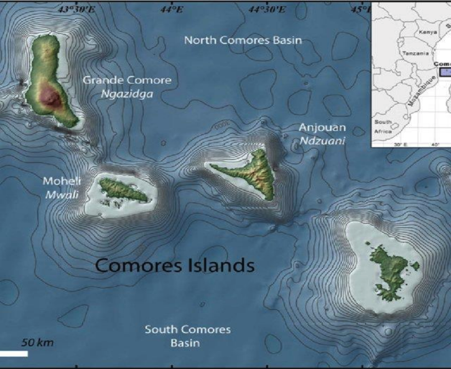
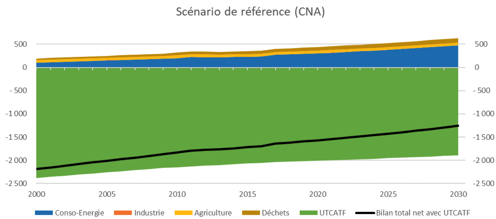
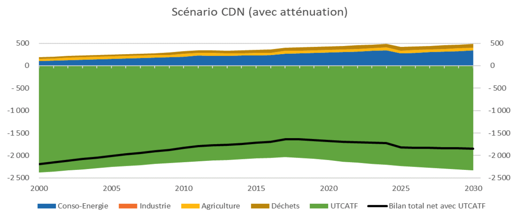
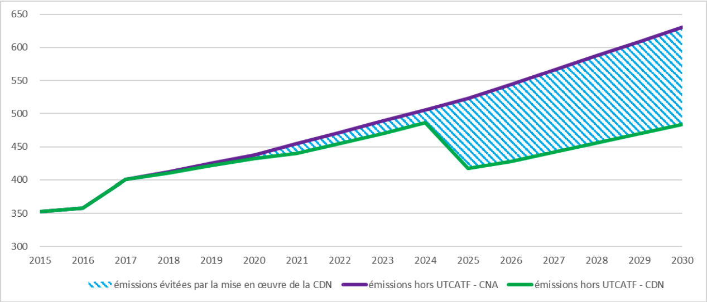
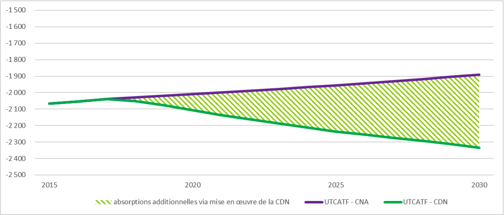
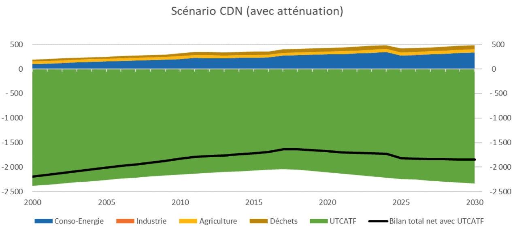

2021-2030
AEPA Alimentation en Eau Potable et Assainissement
AFD Agence française de développement
AMCC Alliance mondiale contre le changement climatique
AP Aire protégée
CC Changement climatique
CEDEF Convention sur l’élimination de toutes les formes de discrimination à l’égard des femmes
CCNUCC Convention cadre des Nations unies sur les changements climatiques
CDN Contributions déterminées au niveau national
CNA Cours normal des affaires (BAU en anglais)
CNCC Comité national sur le changement climatique
COI Commission de l’Océan indien
COP Conférence des parties
CPAD Conférence des partenaires pour le développement
CPDN Contributions prévues déterminées au niveau national
CRDE Centre rural de développement économique
DGEF Direction générale de l’environnement et des forêts
GES Gaz à effet de serre
GIEC Groupe d'experts intergouvernemental sur l'évolution du climat
IDH Indicateur de développement humain
IMF Institutions de micro finance
IPF Indice de participation des femmes
LEAP Long range Energy Alternatives Planning
MNV Mesure, notification et vérification
MW Mégawatts
ODD Objectif de développement durable
OIT Organisation internationale du travail
PACC Plan d’action sur le changement climatique
PAN Processus de plan national d’adaptation
PANA Programme d’action national d’adaptation au changement climatique
PCE Plan Comores émergent 2030
PEID Petit état insulaire en développement
PIB Produit intérieur brut
PNEEG Politique nationale d’équité et d’égalité de genre
PNUD Programme des Nations unies pour le développement
RRC Réduction des risques de catastrophes
SCA2D Stratégie de croissance accélérée et de développement
SONEDE Société nationale de gestion et de distribution de l’eau
S&E Suivi et Evaluation
TCN Troisième communication nationale
UTCATF Utilisation des terres, changement d’affectation des terres et foresterie
|
paramètre |
CDN révisé |
|
Type d’objectif |
% de baisse des émissions de GES et augmentation des absorptions de CO2 par rapport au scénario de référence (Cours normal des affaires ou CNA, c’est-à-dire sans action d’atténuation). Les deux scénarios divergent à partir de 2018 car le scénario CDN intègre après 2015 les mesures d’ores-et-déjà mises en œuvre par les Comores, prévues dès la CDN 1. |
|
Périmètre |
Le territoire concerné couvre les trois îles de l’Union des Comores : Anjouan, Grande Comores, Mohéli |
|
Gaz couverts |
Dioxyde de carbone (CO2) ; Méthane (CH4) ; Oxyde nitreux (N2O) ; Gaz fluorés (HFC) |
|
Année cible |
2030 |
|
Période de mise en œuvre |
2020-2030 |
|
Objectif de la CDN : |
|
|
PRG |
Les PRG du deuxième rapport d’évaluation du GIEC sont utilisés, en cohérence avec les travaux de la Troisième Communication nationale et du BUR. PRG CO2 =1 ,PRG CH4 = 21 , PRG N2O =310 |
|
Secteurs couverts |
Energie, industrie, agriculture, UTCATF, déchets |
|
Catégories clés : |
Energie : Production électrique Industrie Routier Maritime (navigation, pèche) Aviation Résidentiel Commercial : Industrie : Lubrifiant et solvant Réfrigération et climatisation Agriculture : Elevage Sols cultivés UTCATF : Forets Terre cultivée Prairie et savane Zone humide Etablissements Autres terres Déchet : Eau usée stockage |
|
Emission en 2030(CNA) : scénario de référence |
-1 260 kt CO2eq KtCO2Eq (hors UTCATF) |
|
Méthodologie pour l’estimation des émissions |
Les méthodes du GIEC 2006 sont appliquées |
INTRODUCTION
Les émissions de gaz à effet de serre (GES) des Comores sont négligeables au niveau mondial et représentent environ 0,001% des émissions mondiales. Cependant, l’Union des Comores tient à contribuer à l’effort international de lutte contre le réchauffement climatique en poursuivant son objectif d’être un puits de carbone et de promouvoir un développement durable.
En ratifiant l’accord de Paris sur le climat dans le cadre de la Convention Cadre des Nations unies sur les changements climatiques (CCNUCC), l’Union des Comores a réaffirmé son engagement de limitation de ses émissions de GES à travers sa première contribution déterminée au niveau national (CDN), soumis en septembre 2015. Cette première CDN fixait un objectif de réduction des émissions de 442 kt CO2eq en 2030 (par rapport à un scénario de référence).
Le présent document constitue la CDN révisée de l’Union des Comores, à l’horizon 2030. Il est le fruit d’un processus inclusif et transparent, qui a duré un peu plus d’un an, concourant à rehausser l’ambition du pays dans la lutte contre le changement climatique en tenant compte des :
Nouvelles orientations des politiques et stratégies de développement national tel que le Plan Comores Emergeant et la stratégie de croissance accélérée et de développement durable,
Nouvelles priorités et des coûts en matière d’investissements prioritaires liés au climat,
Analyses des nouveaux secteurs et gaz à considérer et à intégrer dans les inventaires de gaz à effet de serre
En parallèle, le pays poursuivra son développement socio-économique conformément à la vision du Chef de l’Etat de faire des Comores « un pays émergeant à l’horizon 2030 résilient aux chocs dans toutes les dimensions du développement durable ».
L’intégration de la dimension Genre, dans la mise en œuvre de la cette nouvelle CDN, reflète le souci du gouvernement comorien de mieux prendre en compte le rôle important que les Comoriennes jouent dans de nombreux secteurs fortement impactés par le changement climatique tels que l’agriculture, la gestion de l’eau et des forêts, la santé, la réduction des risques de catastrophes ainsi que les impacts spécifiques qu’elles subissent de par leurs rôles et responsabilités qui diffèrent de ceux des hommes dans la société comorienne.
Cependant, une mise en œuvre réussie de la CDN requiert de mettre en place les arrangements institutionnels nécessaires et d’œuvrer en faveur de facteurs de réussite afin de faire face aux contraintes rencontrées.
Compte tenu de ses moyens limités, les actions d’atténuation de ses émissions de Gaz à Effet de Serre envisagées sont néanmoins conditionnées à l’obtention de financements internationaux.

Situé dans l’océan indien à l’entrée Nord du canal de Mozambique entre les rives de la Tanzanie, du Mozambique et de Madagascar (43 et 45.5 degré de longitude Est et -10.5 et -13.5 degré de latitude Sud), l’archipel des Comores est constitué de 4 iles volcaniques (Ngazidja : 1148km2, Mwali : 290km2, Ndzouani : 424km2 et Maoré : 370km2). La distance entre elle est d’environ 30 à 40km et sont isolées par des fosses sous-marines de plus de 3500m de profondeur. Le pays se trouve sur la principale route des géants pétroliers qui transportent 30% de la production mondiale pétrolière du Moyen Orient vers l’Europe et l’Amérique, soit un près de 5000 voyages de pétroliers par an.
La population comorienne est estimée à 832 322 habitants1 et varie de manière importante d’une île à une autre. Le pays est densément peuplé, avec près de 400 habitants au km² concentrés dans les principales villes du littoral. La population est relativement jeune (56% a moins de 20 ans) et est à majorité rurale (70%).
Avec un revenu national brut par habitant de 1360$, l’Union des Comores vient de rejoindre le groupe des pays à revenu intermédiaire dans la tranche inférieure, selon le dernier classement de 2019 de la Banque mondiale. Le secteur primaire (agriculture, pêche et élevage) contribue pour 46% du PIB contre 12,4% pour le secondaire et fournit 57% des emplois totaux dont 62,7% sont occupés par des femmes et 90% des recettes d’exploitation2.
L’union des Comores est caractérisée par un climat tropical humide sous influence océanique à deux saisons :
Une saison d’été australe, chaude et humide, allant de mi-novembre à mi- avril avec une température moyenne d’environ 27°C en basse altitude et des maximas oscillant entre 33 et 35°C et des minima variables autours de 21° et 24°C
une saison d’hiver australe, sèche et fraîche allant de mi-juin à mi-octobre avec une température moyenne de 23°C en basse altitude et des maximas oscillant entre 27 et 29°C.
Le Pays est particulièrement vulnérable au changement climatique, comme tous les autres petits états insulaires en développement (PIED) : les analyses des données météorologiques ont montré l’existence d’un dérèglement climatique qui se manifeste par une diminution progressive de la pluviométrie, une tendance à la hausse de la température annuelle, une élévation du niveau de la mer, une aridité accrue et d’avantage de sécheresse.
Parallèlement, les fréquences des évènements climatiques et météorologiques extrêmes tels que, les tempêtes tropicales, les inondations, les vagues de chaleurs et les épisodes de sècheresse ont légèrement augmentées et constituent les principaux aléas impactant l’Union des Comores. Combinés aux pressions anthropiques (déforestation, dégradation des terres, extraction de sable, pratiques agricoles obsolètes, etc.) exercées sur les ressources naturelles, ces aléas sont susceptibles de compromettre fortement les efforts de développement entrepris par le pays au cours des dernières années et d’accentuer la vulnérabilité de certaines écosystèmes et groupe des populations déjà fragiles. Sans mesures ambitieuses, le coût des impacts liés au climat a été estimé en 2014 à 836 millions de dollars américains d’ici 20503, soit un coût annuel moyen sur la période de 23 millions de dollars américains qui, ramené au PIB de 20194 représenterait 1,9%.
L’étude de vulnérabilité réalisée en 2018 a estimé les pertes occasionnées par les dégâts des catastrophes naturelles jugées majeures à 0,39% du PIB moyen sur la période 1980 – 2017. Cependant, ce chiffre est une moyenne sur la période considérée et ne reflète pas l’hétérogénéité et l’ensemble des dégâts causés par les différents événements en raison d’absence de données
L’agriculture et la biodiversité sont les secteurs les plus vulnérables au changement climatique suivis par les forêts, les zones côtières, la pêche, les ressources en eau, la santé et les infrastructures économiques et sociales.
Les autres sources de la vulnérabilité du pays sont liées à :
une incidence de la pauvreté4 qui varie d’une île à l’autre et qui semble plus forte dans les zones rurales,
à un chômage estimé à 3,7% en 2018 mais qui touche particulièrement les jeunes (8,5%) et les femmes (4,06%),
à une croissance démographique relativement élevée (2,24 % en 2018)2 mais qui est cependant inférieure à celle du PIB (3,43% en 2018)3.
L’union des Comores prévoit, à travers cette CDN révisée, une réduction nette de ces émissions de GES, hors UTCAT, de 23% et une augmentation de son puits net d’absorptions de CO2 de 47% à l’horizon 2030 par rapport au scénario de référence. Le cout global de cette ambition est estimé à 902 million d’euro dont 96 millions d’euro est inconditionnel soit 5%.

Figure.1 : émissions des GES suivant le scénario CNA (KtCO2Eq)
L’Union des Comores présente un bilan net, neutre en carbone, selon le scénario CNA, d’environ -1 260 ktCO2eq en 2030 : le puits de carbone compense toutes les émissions des autres secteurs.
Les secteurs qui émettent le plus actuellement sont les secteurs de l’énergie, de l’agriculture et du traitement des déchets.
Sans mesures d’atténuation des émissions, selon un scénario de Cours Normal des Affaires, le bilan net pourrait passer de -1 714 kt CO2eq en 2015 à -1 260 kt CO2eq en 2030.
Bien que le bilan net des émissions soit négatif (scénario CNA), l’Union des Comores présente encore des atouts et des potentiels de réduction de ses émissions de GES durant la décennie à venir. Le graphique ci-dessous illustre la part de l’atténuation obtenue via la réduction des émissions hors UTCATF par rapport à un scénario CNA.

Figure.2 : émissions des GES suivant le scénario CDN (KtCO2Eq)
Les secteurs ayant un potentiel pour l’atténuation sont l’énergie, l’UTCATF, l’Agriculture et les déchets. Les mesures d’atténuation visées par ses secteurs permettent de ralentir la hausse des émissions et d’augmenter les puits de carbone, notamment en forêt et sur les terres en 2030 par rapport au scénario CNA.
Des actions d’atténuation prioritaires (réduction des émissions et augmentation des absorptions dans les puits de carbone) à mettre en ouvre pour renforcer le développement sobre en carbone et conditionnées à des financements internationaux, sont présentées dans le tableau ci-après.
|
Secteur |
Contribution aux efforts d’atténuation totale du Pays (KtCO2Eq)en 2030 |
Nombre de Mesures |
Coût associé (en Millions d’€) |
|
Energie |
131 |
5 |
300 |
|
Agriculture |
- |
2 |
Non estimé |
|
Déchet |
15 |
2 |
22,4 |
|
UTCATF |
443 |
6 |
47,2 |
|
Total |
589 |
15 |
369,6 |
Tableau 1. Actions d’atténuation conditionnelles
Energie
Le secteur de l’énergie (production et consommation d’énergie) présente des potentiels d’atténuation importants en particulier par le recours aux énergies renouvelables, dont le photovoltaïque et la géothermie pour la production d’électricité et la diminution de l’usage du bois de chauffe dans le résidentiel et l’industrie.
Agriculture
L’agriculture, secteur clé de l’économie comorienne, comprend des activités d’élevage (bovins, caprins et volailles principalement), des cultures vivrières et des cultures de rente (ylang-ylang, vanille…). Les émissions du secteur proviennent essentiellement de l’élevage, via la fermentation entérique des bovins et la gestion des déjections.
Compte tenu d’une dynamique de croissance de la production, il n’est pas envisagé de considérer une baisse du cheptel dans cette CDN. En revanche, il est possible de réduire l’importation d’engrais minéraux et organiques pour favoriser l’usage d’engrais organiques locaux.
Déchets
Le traitement des déchets (en majorité des déchets alimentaires) constitue un enjeu important, car leur collecte et leur traitement est encore insuffisant. Les actions associées sont l’amélioration de la collecte, le développement du biogaz et du compost.
Utilisation des Terres, changement d’affectation des terres et foresterie
Le secteur UTCATF est un secteur clé, il permet de comptabiliser les absorptions de CO2 en lien avec la croissance des arbres (forêt, arboriculture, agroforesterie) mais il engendre aussi des émissions (collecte de bois, déboisement, brûlage).
Les actions d’atténuation visant ce secteur contribueront par ailleurs à renforcer les capacités d’adaptation des populations comoriennes.
Le graphique ci-dessous illustre la part de l’atténuation obtenue via la réduction des émissions hors UTCATF par rapport à un scénario de cours normal des affaires (CNA). Sur la période 2015-2030, 843 kt CO2eq d’émissions cumulées sont évitées par mise en œuvre des actions d’atténuation.

Figure 3 : Comparaison des scénarios CNA et CDN pour le bilan tous secteurs (hors UTCATF)(en kt CO2eq)
Les absorptions additionnelles obtenues grâces aux actions du scénario CDN dans le secteur UTCATF sont présentées dans le graphique ci-dessous. Sur la période 2015-2030, 3 103 kt CO2eq d’absorptions additionnelles cumulées sont permises par la mise en œuvre des actions d’atténuation.

Figure 4: Comparaison des scénarios CNA et CDN pour l’UTCATF et absorptions additionnelles (en kt CO2eq)
Enfin, le graphique ci-dessous présente l’évolution des émissions selon le scénario CDN, montrant que le pays resterait un puits net de carbone.

Figure 5: Evolution des émissions et absorptions selon le scénario CDN (en kt CO2eq)
Certaines actions d’atténuation sont prioritaires, à court terme, car nécessaires à la mise en œuvre d’autres projets :
consolidation du réseau électrique afin de réduire les pertes ;
réduction du bois de feu, de service et industriel, par la promotion d’autres sources d’énergie, la protection des espaces forestiers et la promotion du bois importé ;
réduction du bois de feu résidentiel, notamment par l’utilisation de brûleurs à bois performants ;
amélioration de la collecte des déchets (sensibilisation, ramassage et sites de traitement).
Les autres actions prioritaires à court et moyen termes qui ont un potentiel d’atténuation important, sont les suivantes :
la poursuite des projets de développement de centrales photovoltaïques ;
le lancement d’une première tranche géothermique (forages exploratoires et forages d’exploitation) ;
l’afforestation, reboisement, agroforesterie, arboriculture ;
l’accroissement et une gestion effective et efficace des aires protégées en particulier des forêts pour limiter le déboisement, la récolte de bois et le brûlage ;
le compostage des déchets organiques.
Les projections obtenues à partir de l’utilisation de modèles climatiques globaux montrent une tendance à la hausse des températures ainsi qu’une augmentation du nombre de jours de forte chaleur. La température annuelle moyenne devrait ainsi augmenter de 0,8 (RCP 2.6) à 2,1°C (RCP 8.5) d’ici 2060 et de 1,2 (RCP 2.6) à 3,6°C (RCP 8.5) d’ici 2090.
Les projections saisonnières prévoient une diminution des précipitations saisonnières, et une augmentation des précipitations pendant la saison des pluies.
Le niveau de la mer a augmenté entre +1 et +6 mm/an depuis 1992 dans la région de l’océan indien. Ce niveau de la mer devrait par ailleurs augmenter de 4 mm par an au cours des cinquante prochaines années, correspondant à une élévation moyenne potentielle de 20 cm d’ici 2050, deux fois plus importante que l’élévation observée au cours des cent dernières années (20 à 25 cm).
Cette élévation du niveau de la mer combiné à l’érosion des côtes, menace les écosystèmes côtiers, les forêts littorales, les équipements et infrastructures, notamment routières, et la plupart des localités côtières.
Les résultats des analyses de vulnérabilité réalisées jusqu’à présent aux Comores montrent que les secteurs les plus vulnérables au changement climatique sont l’agriculture et la biodiversité (vulnérabilité très élevée), la forêt, les zones côtières, la pêche, les ressources en eau, la santé et les infrastructures économiques et sociales (vulnérabilité élevée). Une analyse de la vulnérabilité de chacun de ces secteurs est présentée dans le rapport technique annexe à cette CDN révisée.
Cette vulnérabilité risque de s’accentuer pour la plupart de ces secteurs, qui ont besoin d’engager urgemment des actions pour faire face aux effets du changement climatique.
3.2.1. Stratégie générale
Conscient des coûts et dommages que les impacts du changement climatique pourraient générer sur différents secteurs de l’économie du pays, l’Union des Comores s’est engagée très tôt dans une démarche de planification de mesures d’adaptation. L’adaptation au changement climatique a ainsi été intégrée dans certains documents de politiques publiques et stratégies nationales, à la fois d’ordre général et sectoriel : PANA, Communications nationales, politique, stratégie et Plan d’Action national sur le Changement Climatique.
Dans son document de politique générale révisé pour la période 2018-2021, la Stratégie de Croissance Accélérée et de Développement Durable (SCA2D), le gouvernement comorien entend ainsi concilier transformation structurelle et diversification de l’économie avec la gestion durable des ressources naturelles et la résilience, plus particulièrement du secteur agricole et des communautés rurales, face aux catastrophes naturelles et aux effets du changement climatique.
L’adaptation se retrouve aussi, dans l’ambition du Plan Comores Emergent 2030 (PCE) nouvellement adopté, qui souhaite faire des Comores d’ici 2030 : « un pays résilient aux chocs dans toutes les dimensions du développement durable ».
3.2.2. Des objectifs révisés et réalistes pour renforcer la résilience du pays
L’exercice de révision participative de la CDN a permis d’actualiser et d’étoffer les objectifs d’adaptation, les indicateurs de suivi et les cibles à 2030 pour les secteurs identifiés comme les plus vulnérables au CC aux Comores (agriculture, biodiversité, forêt, pêche et écosystèmes côtiers et marins, ressources en eau, santé et infrastructures économiques et sociales). En complément, les secteurs transversaux de la réduction des risques de catastrophe et de l’intégration de l’adaptation et de la sensibilisation ont également été priorisés. Le tableau ci- dessous recense les actions d’adaptations fixées par secteur.
Tableau 2. Actions d’adaptation par secteurs vulnérables
|
Secteur |
Actions d’adaptation |
|
Agriculture et élevage |
Développement d’une politique agricole résiliente et intelligente au climat |
|
Développement de l’irrigation agropastorale |
|
|
Mise en place d’un système d’alerte précoce et d’intervention efficace sur tout le territoire en cas d’émergence de nouvelles maladies bovines ou caprines |
|
|
Biodiversité et forêt |
Extension de la superficie disposant d’un statut d’aire protégée |
|
Extension de la superficie reboisée |
|
|
Pêche et écosystèmes côtiers et marins |
Suivi et restauration des écosystèmes marins et côtiers |
|
Sensibilisation et sécurisation des pêcheurs face aux aléas climatiques |
|
|
Ressources en eau |
Accès de la population à une source d’eau améliorée |
|
Diffusion et adoption du principe de gestion intégrée des ressources en eau |
|
|
Santé |
Développement d’une stratégie durable de lutte contre le paludisme et les nouvelles maladies émergentes comme la COVID-19 |
|
Développement et mise en œuvre d’un système d’alerte précoce et d’intervention efficace sur tout le territoire en cas d’émergence de nouvelles maladies. |
|
|
Infrastructures économiques et sociales |
Développement et mis en œuvre de plans d’aménagement/développement des infrastructures économiques et sociales intégrant le changement climatique |
|
Réhabilitation des infrastructures routières actuelles |
|
|
RRC |
Identification et cartographie des zones vulnérables aux risques de catastrophes naturelles. |
|
Mise en application d’un système de normes de construction qui prend en compte les risques de catastrophe |
|
|
Intégration et sensibilisation |
Sensibilisation aux impacts du CC |
|
Renforcement de capacité à tous les niveaux sur la définition et la mise en œuvre des mesures d’adaptation au CC |
Des actions spécifiques à court et moyen termes et des idées de projet sont identifiées pour chaque secteur dans un plan de mise en œuvre annexe, avec une priorisation de ces actions et une estimation des coûts, donnée pour chaque action / idées de projet.
L’Union des Comores a ratifié, plus des autres conventions relatives aux droits de l’Homme, la Convention sur l’élimination de toutes les formes de discrimination à l’égard des femmes (CEDEF) le 31 octobre 1994. Il a adhéré à la Déclaration et au Programme de Beijing adoptés lors de la 4ème conférence mondiale sur les femmes en 1995 et a été l’un des premiers pays africains à ratifier en 2004, le Protocole à la Charte Africaine des droits de l’Homme et des Peuples relatif aux droits de la femme en Afrique.
En 2008, le pays s’est doté d’une Politique nationale d’équité et d’égalité de genre (PNEEG) qui vise à accorder la priorité à une meilleure participation des femmes aux activités de développement économique, aux activités décisionnelles qu’elles soient politiques, traditionnelles ou religieuses, au renforcement des capacités des femmes et des filles, au droit à l’éducation, au droit à la santé, au statut juridique et à l’application des droits fondamentaux des femmes et des filles.
La vision du gouvernement de l’Union des Comores est de « faire des Comores un pays émergent d’ici 2030, respectueux des droits de l’Homme, de l’égalité de genre et promouvant l’Etat de Droit ». C’est ainsi qu’en 2017, la loi sur loi sur la parité instituant un quota d’au moins 30% de femmes aux fonctions électives et nominatives a été adoptée pour, entre autres, à encourager la participation politique des femmes et leur représentation aux processus électoraux.
En 2018, la Constitution révisée garantit en son article 30 « les droits de la Femme à être protégée par les pouvoirs publics contre toute forme d’abandon, d’exploitation et de violence. A travers l’article 34, elle leur reconnait « le droit d’accès aux instances politiques de représentation locale et nationale » et à son article 36 elle prévoit « une juste et équitable répartition entre les hommes et les femmes » dans la composition du Gouvernement.
En matière d’égalité de Genre, bien que les femmes représentent environ la moitié de la population totale (49,6%), elles restent encore sous-représentées à tous les niveaux, hormis dans le secteur agricole où elles occupent 63% des emplois dans les domaines de la production vivrière, maraîchère et avicole. Elles peuvent parfois travailler dans les cultures de rente mais rarement au niveau de la commercialisation, contrairement au secteur de la pêche où elles sont en charge de la vente et non de la production.
Au niveau politique, depuis 2003, l’Indice de participation des femmes (IPF) aux Comores est de 0,3034, ce qui traduit une quasi-absence des femmes dans les instances de responsabilité et décisionnelles qui serait due aux lourdes responsabilités imposées par le foyer qui leur laissent peu de temps libre à consacrer à la chose publique et au poids des traditions qui reconnaît plus de pouvoir aux hommes aussi bien au niveau familial que dans la société en général5.
L’économie informelle joue un rôle majeur dans la création d’emplois, de revenus ainsi que dans la production. Selon les statistiques de l’OIT6, la part de l’emploi informel dans l’emploi total en 2019 est estimée à 89%, occupant 86% des hommes et 94% des femmes. Ces dernières sont un peu plus de 77% à occuper un emploi vulnérable, c’est-à-dire à travailler à leur compte principalement dans l’agriculture et le petit commerce ou comme employée familiale contre 54% des hommes.
Environ 40% des ménages sont des ménages monoparentaux féminins (alors que seuls 2,8% des ménages ont à leur tête un homme seul).
L’accès au crédit bancaire traditionnel est très limité pour les femmes entrepreneures qui n’arrivent pas à réunir les conditions requises pour l’obtention d’un prêt. Les Institutions de micro finance (IMF), avec leurs conditions plus souples, constituent la principale alternative (50% des clients des IMF sont des femmes).
En milieu rural, les moyens de subsistance des femmes dépendent en grande partie des ressources naturelles (eau, produits de la forêt, agriculture) fortement tributaires des aléas climatiques. Les impacts du CC (dégradation des terres et des forêts, érosion, stress hydrique, catastrophes naturelles) conduisent à la raréfaction des ressources rendant plus difficiles les activités menées par les femmes.
L’accès difficile des femmes aux ressources économiques et productives fragilise d’avantage leurs aptitudes à s’adapter au changement climatique.
Un meilleur accès aux énergies renouvelables avec des technologies adaptées permettrait l’accès à des services énergétiques en matière d’éclairage, de cuisson et d’activités productives qui réduiraient leur charge de travail et dégageraient du temps qu’elles pourraient consacrer à d’autres tâches y compris génératrices de revenus.
Les initiatives menées ces dernières années par le gouvernement comorien avec l’appui des partenaires au développement concourent à renforcer l’autonomisation des femmes en leur offrant davantage d’opportunités économiques et d’activités génératrices de revenus. De même, des efforts sont faits en matière de parité entre les sexes dans les activités de renforcement de capacités.
De manière spécifique, le gouvernement comorien a mis en place des projets dans le domaine de l’agriculture avec un impact environnemental dont de lutte contre le changement climatique dans lesquels 45% des bénéficiaires sont des femmes7. Ces dernières, à l’instar des hommes, ont été sensibilisées sur les questions liées au changement climatique, ont reçu des formations et ont eu accès à des outils et techniques plus performants en matière d’agriculture. Le Plan National de Préparation et de Réponse à l’urgence a pris en compte le genre dans le secteur de l’éducation et de la protection, ce qui devrait se traduire par la « mise en place de mécanismes de surveillance et de sensibilisation des populations déplacées des différentes formes d’abus, de violence et d’exploitation sexuelle, la prévention les abus, la violence et l’exploitation sexuelle des enfants et des femmes, la prise en charge correcte de chacun des groupes vulnérables identifiés en apportant les moyens humains et matériels indispensables et la mise en place des structure de protection de base et d’encadrement adaptée et accessible aux groupes vulnérables notamment les femmes et les enfants ».
Ainsi, l’Union des Comores entend poursuivre ses efforts en vue d’adopter une approche sensible aux droits humains et au Genre dans toutes ses activités liées au changement climatique et à sa CDN révisée en particulier, et ce, conformément à la décision 18/CP.20 du programme de travail de Lima relatif au genre adopté par les parties à la COP 20 de la CCNUCC.
Elle s’engage à améliorer la participation des femmes et de tout autre groupe vulnérable au processus de planification, de prise de décision ainsi qu’en matière de renforcement des capacités tant en termes d’éducation, de formation que d’accès aux technologies.
Des analyses sexo-spécifiques seront réalisées afin de mieux appréhender les différences qualitatives concernant les femmes et les hommes, les filles et les garçons et de mieux prendre en compte les besoins, les droits et les priorités de chacun. Le suivi intègrera la collecte systématique de données ventilées par sexe et par âge afin de suivre l’impact sensible au genre des actions de lutte contre le changement climatique et l’efficacité des initiatives d’intégration du genre. Des bases de référence et des indicateurs propres au genre seront définis afin de suivre les progrès en matière d’équité entre les sexes.
L’Union des Comores vise à consolider les mécanismes existants de collecte, partage et suivi des données pour l’évaluation de la mise en œuvre de la CDN.
Ainsi, le Comité national sur le changement climatique (CNCC) créé par l’arrêté ministériel n°18- 009 en 2018 sera revu sur le plan de sa composition et de sa taille, afin d’assurer une plus grande représentativité des secteurs et des différents groupes qui composent la société comorienne, tous concernés par la question du changement climatique d’une part et une meilleure mobilisation de ses participants en limitant leur nombre, d’autre part. Ses prérogatives seront également réexaminées. La validation de l’étude de faisabilité pour la mise en place d’un observatoire national sur le climat et la mobilisation des moyens humains et financiers nécessaires à son fonctionnement parachèveront l’institutionnalisation de la collecte, de l’harmonisation, de l’organisation, du stockage et de la facilitation à l’accès des données relatives au climat qui constituent in fine sa vocation.
En matière de suivi, le dispositif institutionnel mis en place dans le cadre de la préparation du premier rapport biennal et de la troisième communication nationale sur le changement climatique pour les inventaires nationaux des émissions de GES sera renforcé.
Quant aux mesures d’adaptation, leur suivi se fera à travers les groupes de travail sectoriels existants. La mise en place d’un système de suivi unique, institutionnalisé et centralisé pour les différents aspects techniques et politiques de la CDN est envisagée et devra être rapidement appuyée. Les résultats de ce suivi seront communiqués aux parties prenantes impliquées dans la mise en œuvre de la CDN et aux décideurs (au niveau local, sectoriel, national) leur permettant si besoin de prendre des mesures correctives d’ajustement.
Une gouvernance climat renforcée
L’Union des Comores s’engage à rendre opérationnelle une structure intersectorielle8 qui rassemble toutes les parties prenantes concernées par la question du changement climatique en lui affectant les ressources humaines et financières nécessaires afin qu’elle ait les moyens d’assurer un pilotage efficace et transparent des engagements climat du pays.
Elle s’engage également à assurer l’informatisation et l’institutionnalisation du système d’inventaire, de projections et de suivi afin d’éviter les pertes d’informations entre deux exercices et permettre la continuité dans le travail effectué par des équipes différentes.
Un système de suivi-évaluation robuste
En vue de s’assurer de l’effectivité de la mise en place et de l’efficacité des actions prévues dans le cadre de sa contribution, l’Union des Comores établira un système rigoureux de suivi et d’évaluation des actions et des résultats atteints qui permettra aussi d’ajuster et éventuellement de réorienter les actions.
Ce système s’établira selon une approche complète de Mesure, de Notification et de Vérification (MNV), et s’appliquera à toutes les composantes formant la stratégie nationale d’atténuation d’émissions de GES. Le système MNV comorien s’articulera autour de trois grandes composantes des GES, à savoir :
Le MNV des émissions nationales de GES, qui portera sur l’élaboration régulière des inventaires de GES, de leur notification et de leur vérification ;
Le MNV des mesures d’atténuation, qui portera sur la mise en place des actions présentées dans la CDN ainsi que de leurs impacts en termes de réduction des émissions de GES ;
Le MNV des appuis, qui devra se charger de suivre, notifier et faire vérifier les appuis reçus par l’Union des Comores en termes de renforcement des capacités, transfert de technologies et appuis financiers.
Un appui financier et technique extérieur
L’Union des Comores compte sur la communauté internationale pour arriver à consolider les efforts entrepris depuis plus de 20 ans en matière de lutte contre le changement climatique. En effet, un soutien international sous forme de financement, de renforcement de capacités et de transferts de technologies est nécessaire pour accompagner la mise en œuvre la CDN révisée:
Soutien financier
L’Union des Comores aura besoin d’une enveloppe globale de plus de 1.301millions d’EUR9 pour mener à bien la mise en œuvre de sa CDN soit environ un montant annuel moyen de 130 millions d’EUR dont au minimum 902 millions d’EUR pour les mesures d’atténuation et 399 millions d’EUR pour les mesures d’adaptation. Compte tenu de ses ressources très limitées, l’Union des Comores ne peut entreprendre ses mesures sans l’aide de la communauté internationale, notamment dans le cadre de l’effort de soutien technologique et financier entre pays promu par l’accord de Paris mais aussi à travers le Fonds Vert pour le climat, le financement des partenaires multilatéraux ou bilatéraux, ou autres mécanismes de financement existants ou futurs y compris issus du secteur privé ou émanant des transferts de la diaspora.
Une partie importante des projets qui s’inscrivent dans le Plan Comores Emergent 2030 (PCE) a été présentée à la Conférence des partenaires pour le développement des Comores (CPAD 2019) qui s’est tenue, début décembre 2019, à Paris, avec l’appui de la France, du groupe de la Banque mondiale, du Programme des Nations unies pour le développement (PNUD) et de la Banque africaine de développement (BAD). A l’issue de cette conférence, environ 4,3 milliards de dollars américains d’engagements financiers ont été annoncés dont 1,6 milliard par les partenaires bilatéraux et multilatéraux et 2,7 milliards par des acteurs du secteur privé.
Banque mondiale (2018), (https://www.donnes.banquemondiale.org),↩
Union des Comores : politique, stratégie et plan d’action sur le changement climatique (2015)↩
Banque mondiale, (https://www.donnees.banquemondiale.org).↩
Rapport national sur le développement humain (2006)↩
Source: Independent Country programme evaluation of Union of Comoros, UNDP IEO, May 2019↩
« Femmes et hommes dans l’économie informelle : un panorama statistique » OIT, 2019.↩
Rapport pays sur les progrès réalisés dans la mise en œuvre de la plateforme d’action de Beijing + 25 ; Commissariat national à la solidarité, à la protection sociale et à la promotion du genre.↩
Membres du CNCC et ceux qui seront chargés du suivi de la mise en œuvre de la CDN révisée s’il s’agit de personnes↩
Il s’agit d’une estimation indicative a minima, certains coûts n’ayant pu être estimés.↩